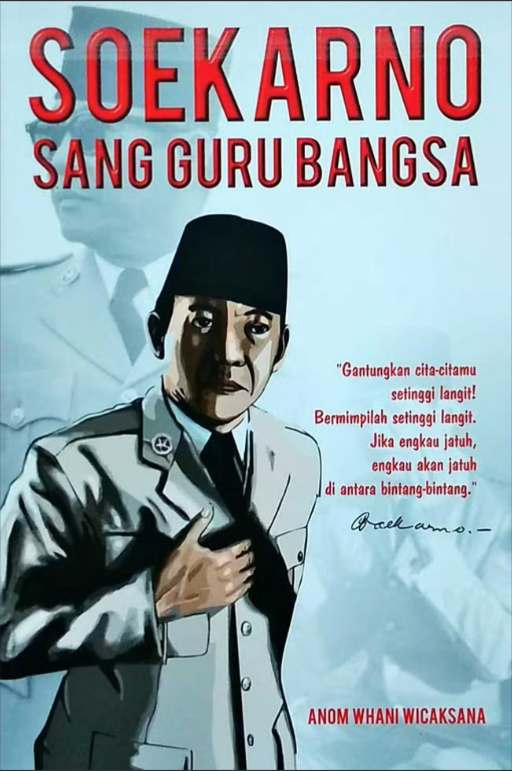
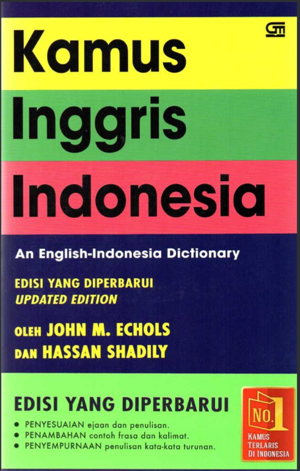
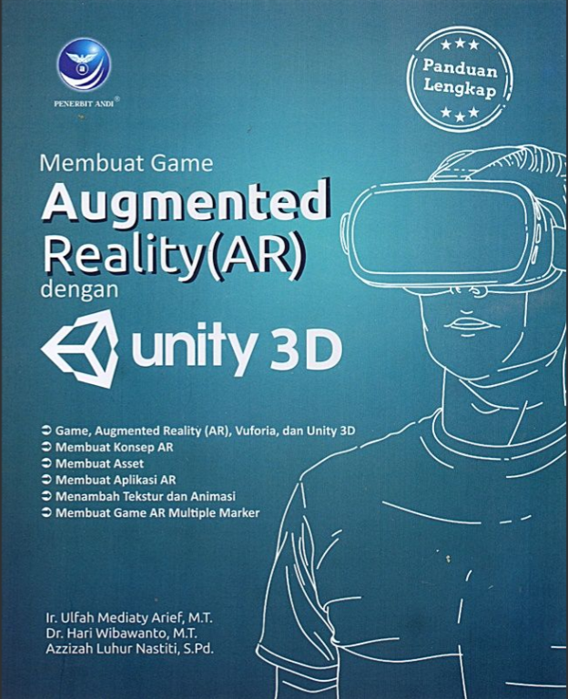
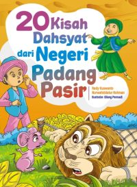
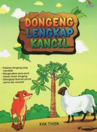

|
 |
 |
 |
 |
 |
|---|
| Judul Buku | Penulis | Penerbit | Tahun Terbit | Link |
|---|---|---|---|---|
| Soekarno Sang Guru Bangsa | Anom Whani Wicaksana | C-Klik Media | 20 Desember 2017 | link |
| Kamus Inggris Indonesia | John M. Echols dan Hassan Shadily | Gramedia Pustaka Utama | 17 Oktober 2014 | link |
| Augmented Reality(AR) | Ir. Ulfah Mediaty Arief, M,T. , Dr. Hari Wibawanto, M,T. , Azzizah Luhur Nastiti, S,Pd. | Andi | 14 Desember 2019 | link |
| 20 Kisah Dahsyat dari Negri Padang Pasir | Redy Kuswanto dan Nurwahiddatur Rohman | Andi Publisher | 2020 | link |
| Dongeng Lengkap Kancil | Kak Thifa | Laksana | 2020 | link |
| Judul Buku | Kutipan |
|---|---|
| Soekarno Sang Guru Bangsa | Bangsa yang besar adalah bangsa yang menghargai jasa para pahlawannya |
| Kamus Inggris Indonesia | Learn (v): belajar, mempelajari |
| Augmented Reality(AR) | Augmented Reality (AR) adalah teknologi yang menggabungkan objek virtual dengan dunia nyata secara langsung (real-time) |
| 20 Kisah Dahsyat dari Negri Padang Pasir | Di tengah kerasnya padang pasir, manusia belajar bahwa harapan tidak pernah benar-benar hilang. Seperti setetes air yang sangat berharga, keimananlah yang menjaga hati tetap hidup meski keadaan terasa kering dan berat |
| Dongeng Lengkap Kancil | Si Kancil mengajarkan bahwa kecerdikan bisa menjadi kekuatan, tetapi harus digunakan dengan bijak. Karena akal yang tajam tanpa kejujuran hanya akan membawa masalah di kemudian hari |